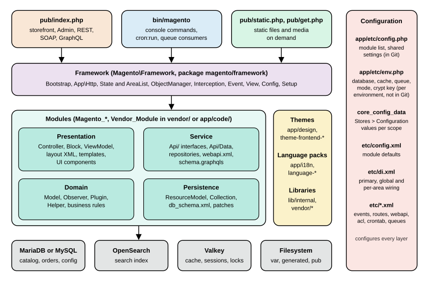
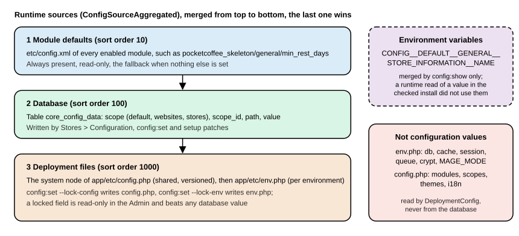

Architecture Overview
|
This content was generated with the assistance of AI and should be verified against the official documentation before being relied on in production. |
Magento is a large PHP application assembled from Composer packages. A small kernel, the Framework, boots the
application, builds objects from XML configuration and dispatches requests. Everything a shop does, from the catalog to
checkout, is a module that plugs into that kernel with XML files in its etc/ folder. Learning where the kernel ends and
the modules begin, which configuration file answers which question and how a request travels from pub/index.php to a
rendered page is what makes the rest of the Magento material readable. This page maps those pieces and ends with the
rules a module developer needs on day one.
The page was written against Magento Open Source and Adobe Commerce 2.4.9 (generally available 2026-05-12) and Mage-OS
3.6.0 (2026-10-14, built on the 2.4.9 code base) and checked on 2026-10-27. Every command output below was produced on
a running Mage-OS 3.6.0 installation (Mage-OS CLI 3.6.0 (based on Magento 2.4.9)) with PHP 8.5.12, MariaDB 11.8.9,
OpenSearch 3.9.0 and Valkey 9.1.3, in developer mode. Adobe’s own distribution uses the magento/* Composer packages
where Mage-OS uses mage-os/*; the code, the directory layout and the commands are the same. What could not be run
here is stated where it matters: Adobe Commerce-only modules, production mode, Varnish, RabbitMQ, the Marketplace
installation and the Software-as-a-Service edition. The architecture described applies to Magento Open Source, Adobe
Commerce on-premises, Adobe Commerce on cloud infrastructure and Mage-OS. Adobe Commerce as a Cloud Service (ACCS) runs a
locked core without PHP modules, so the in-process parts of this page (modules, areas, di.xml) do not apply to it; the
editions page compares what each edition allows.
The running example is Pocket Coffee. Its roast date badge on the product page and its "order placed" log entry cross several of the layers below; the last section shows where each piece lives. The next pages build them: module anatomy, dependency injection and plugins, events and observers.
The big picture
A Magento installation is one directory tree. The checked installation looks like this at its root:
$ ls
CHANGELOG.md COPYING.txt Gruntfile.js.sample LICENSE.txt LICENSE_AFL.txt SECURITY.md
app auth.json.sample bin composer.json composer.lock dev generated grunt-config.json.sample
lib nginx.conf.sample package.json.sample phpserver pub setup var vendor
$ ls app/etc
NonComposerComponentRegistration.php config.php db_schema.xml di.xml env.php
registration_globlist.php vendor_path.php
$ ls pub
cron.php errors get.php health_check.php index.php media opt static static.php
Read the figure from top to bottom for a request and from left to right for ownership. The three entry points start the Framework. The Framework hosts modules, which are organised in four layers. Themes, language packs and libraries sit beside the modules. The modules read and write MariaDB or MySQL, OpenSearch, Valkey and the filesystem. The red column on the right is configuration, which touches every layer.
| Directory | Role |
|---|---|
|
Modules written for this shop, as |
|
Themes of this shop, as |
|
Language packs of this shop, as |
|
Deployment configuration ( |
|
The command line entry point: setup, modules, cache, indexers, cron, queues, deployment mode. |
|
Developer tooling: |
|
Classes and metadata that Magento writes: factories, proxies, interceptors ( |
|
Frontend libraries and shared assets ( |
|
The web root. |
|
The installer sources ( |
|
Runtime data: |
|
Composer packages: the Framework, the core modules ( |
Production servers should point the web root at pub/ (the directories/document_root_is_pub key in env.php records
this) so that app/, var/ and vendor/ are never reachable over HTTP.
The four kinds of component
Magento calls everything that is registered with the Framework a component. The registrar knows five types, defined as
constants of Magento\Framework\Component\ComponentRegistrar:
| Type constant | Value | What it is |
|---|---|---|
|
|
A feature: PHP classes, XML configuration, templates. Named |
|
|
A look: layouts, templates, styles, scripts for the |
|
|
A translation pack: |
|
|
A set of PHP classes without module semantics, for example the Framework ( |
|
|
The installer. |
A component announces itself with a registration.php file. Composer packages list it under autoload.files, so
Composer loads it on every request. Code that is not a Composer package is found through
app/etc/NonComposerComponentRegistration.php, which includes every file matching the patterns of
app/etc/registration_globlist.php:
return [
'app/code/*/*/cli_commands.php',
'app/code/*/*/registration.php',
'app/design/*/*/*/registration.php',
'app/i18n/*/*/registration.php',
'lib/internal/*/*/registration.php',
'lib/internal/*/*/*/registration.php',
'setup/src/*/*/registration.php'
];Registering a module does not enable it. Enablement is a separate step recorded in app/etc/config.php; the
module anatomy page covers that lifecycle.
Layers inside a module
Adobe’s architecture documentation splits a module into four layers, and the directory names of the core modules follow them. The layers matter because each one has a different stability promise.
| Layer | Typical folders and files | Responsibility |
|---|---|---|
Presentation |
|
Turns a request into a response: routing, page assembly, HTML, JSON and redirects. Depends on the service layer, not on the models. |
Service (service contracts) |
|
The stable public API of the module: PHP interfaces for operations and data, exposed unchanged as REST and GraphQL.
Interfaces marked |
Domain |
|
Business rules: price calculation, order placement, validation. Implementations behind the service interfaces. |
Persistence |
|
Reads and writes the database through resource models and collections; declares tables and applies data patches. |
The service layer is the boundary other code should use. A module that reads \Magento\Catalog\Model\Product directly
depends on an implementation; a module that calls ProductRepositoryInterface depends on a contract that survives
upgrades. The service contracts page details this.
Areas
An area is a set of configuration that applies to one kind of request. It decides which di.xml, events.xml, routes,
layouts and translations are loaded, so that, for example, the storefront does not pay for the Admin’s wiring.
Magento\Framework\App\AreaList knows the areas, and the codes below are the ones it reports on the checked installation
plus the always-present global:
| Area code | Front name | Front controller (preference) | Served by |
|---|---|---|---|
|
none |
none |
Not an area of its own: the |
|
none (default area) |
|
The storefront. Any URL whose first path segment is not the front name of another area. |
|
|
|
The Admin panel. |
|
|
|
REST API: |
|
|
|
SOAP API. |
|
|
|
|
|
none |
|
Scheduled jobs run by |
Module files are placed in an area by directory: etc/di.xml is global, etc/frontend/di.xml is frontend only,
etc/adminhtml/di.xml Admin only, and likewise etc/webapi_rest/, etc/webapi_soap/, etc/graphql/ and
etc/crontab/. Layouts and templates live under view/frontend/ or view/adminhtml/, with view/base/ shared by both.
On the checked 328 core modules, 97 have a frontend directory under etc/, 155 an adminhtml one, 50 a graphql one,
34 a webapi_rest one, 24 a webapi_soap one and 4 a crontab one.
Which area applies is decided at the start of a request. Http::launch() asks the AreaList which area owns the first
URL segment, stores the answer in Magento\Framework\App\State and merges that area’s DI configuration into the
ObjectManager. Code can read the answer with State::getAreaCode(). A console command starts without an area, and asking
for one fails; this surprises every developer once. The diagnostic command used for this page shows both facts. It is a
small module, PocketCoffee_ArchProbe, made of registration.php, etc/module.xml (the same two files as in the
module anatomy page), an etc/di.xml that adds the command to the console and
the command class:
<?xml version="1.0"?>
<config xmlns:xsi="http://www.w3.org/2001/XMLSchema-instance" xsi:noNamespaceSchemaLocation="urn:magento:framework:ObjectManager/etc/config.xsd">
<type name="Magento\Framework\Console\CommandListInterface">
<arguments>
<argument name="commands" xsi:type="array">
<item name="pocketcoffee_arch_probe" xsi:type="object">PocketCoffee\ArchProbe\Console\Command\ProbeCommand</item>
</argument>
</arguments>
</type>
</config><?php
declare(strict_types=1);
namespace PocketCoffee\ArchProbe\Console\Command;
use Magento\Framework\App\Area;
use Magento\Framework\App\AreaList;
use Magento\Framework\App\Config\ScopeConfigInterface;
use Magento\Framework\App\DeploymentConfig;
use Magento\Framework\App\State;
use Magento\Framework\Exception\LocalizedException;
use Magento\Framework\Module\ModuleListInterface;
use Symfony\Component\Console\Command\Command;
use Symfony\Component\Console\Input\InputInterface;
use Symfony\Component\Console\Input\InputOption;
use Symfony\Component\Console\Output\OutputInterface;
/**
* Prints what the framework knows about areas, modules and deployment configuration.
*/
class ProbeCommand extends Command
{
public function __construct(
private readonly State $state,
private readonly AreaList $areaList,
private readonly DeploymentConfig $deploymentConfig,
private readonly ModuleListInterface $moduleList,
private readonly ScopeConfigInterface $scopeConfig,
?string $name = null
) {
parent::__construct($name);
}
protected function configure(): void
{
$this->setName('pocketcoffee:arch:probe')
->setDescription('Shows areas, area code behaviour, deployment config keys and module order')
->addOption('config-path', null, InputOption::VALUE_REQUIRED, 'Print the effective system configuration value of this path');
}
protected function execute(InputInterface $input, OutputInterface $output): int
{
if ($input->getOption('config-path')) {
$path = $input->getOption('config-path');
$output->writeln(sprintf('%s = %s', $path, var_export($this->scopeConfig->getValue($path), true)));
return Command::SUCCESS;
}
// 1. A console command runs without an area code.
try {
$this->state->getAreaCode();
} catch (LocalizedException $e) {
$output->writeln('getAreaCode() in CLI: ' . $e->getMessage());
}
// 2. Areas known to the AreaList and their front names.
foreach ($this->areaList->getCodes() as $code) {
$output->writeln(sprintf('area %-12s frontName=%s', $code, $this->areaList->getFrontName($code) ?? '(none)'));
}
// 3. Emulating an area for the duration of a callback.
$inside = $this->state->emulateAreaCode(
Area::AREA_FRONTEND,
fn () => $this->state->getAreaCode()
);
$output->writeln('inside emulateAreaCode: ' . $inside);
// 4. Deployment configuration (env.php + config.php), never printing secrets.
$output->writeln('MAGE_MODE=' . $this->deploymentConfig->get(State::PARAM_MODE));
$topLevel = array_unique(array_map(
static fn (string $path): string => explode('/', $path)[0],
array_keys($this->deploymentConfig->get() ?? [])
));
$output->writeln('top-level keys of env.php and config.php: ' . implode(', ', $topLevel));
$output->writeln('enabled cache types: ' . implode(', ', array_keys(
array_filter($this->deploymentConfig->get('cache_types') ?? [])
)));
// 5. Module order as loaded.
$names = $this->moduleList->getNames();
$position = array_search('PocketCoffee_ArchProbe', $names, true);
$output->writeln(sprintf('modules loaded: %d, PocketCoffee_ArchProbe is #%d', count($names), $position + 1));
$output->writeln('first five: ' . implode(', ', array_slice($names, 0, 5)));
return Command::SUCCESS;
}
}Running it prints the following lines first (the rest of the output appears in the sections on configuration and module load order):
$ bin/magento pocketcoffee:arch:probe
getAreaCode() in CLI: Area code is not set
area frontend frontName=(none)
area adminhtml frontName=(none)
area graphql frontName=graphql
area crontab frontName=(none)
area webapi_rest frontName=rest
area webapi_soap frontName=soap
inside emulateAreaCode: frontendThe front name of adminhtml shows as (none) because it is produced by a resolver class
(Magento\Backend\App\Area\FrontNameResolver) the first time a request is matched; getFrontName() only returns static
values. State::emulateAreaCode('frontend', callback) runs a callback as if the request were in another area and restores
the previous code afterwards. It changes the code only: it does not merge that area’s di.xml into the ObjectManager,
which is why long-running scripts that need area-specific wiring load the area configuration themselves (the
dependency injection page shows how).
The request lifecycle
A storefront request is short when read as a list of classes. The sequence below follows GET /pcskeleton/index/index, a
route of the example module used throughout this section.
Step by step, with the code that does it:
| Step | Where | What happens |
|---|---|---|
1 |
|
Requires |
2 |
|
Starts the profiler, installs the error handler, asserts maintenance mode and that Magento is installed, calls
|
3 |
|
|
4 |
|
Wrapped by plugins (below). Loops over the routers (at most 100 iterations) until a request is dispatched. |
5 |
Routers |
|
6 |
|
Loads the area’s design and translation parts, runs the request validators (CSRF form key, HTTP method, backpressure),
dispatches |
7 |
|
A |
8 |
|
|
Failures at any point reach Http::catchException(). In developer mode the exception trace is printed. In the other modes
the exception is logged with a report id and the visitor is shown pub/errors/report.php, which reads the report from
var/report/.
Plugins around the front controller
The front controller is itself extended by plugins, which is how cross-cutting behaviour enters the pipeline without
changing the class. bin/magento dev:di:info 'Magento\Framework\App\FrontController' frontend lists the plugins of the
storefront on the checked installation:
Plugin Method Type
Magento\PageCache\Plugin\RegisterFormKeyFromCookie dispatch before
Magento\Store\Model\Plugin\StoreCookie dispatch before
Magento\Framework\Module\Plugin\DbStatusValidator dispatch before
Magento\Deploy\Model\Plugin\ConfigChangeDetector dispatch before
Magento\PageCache\Model\App\FrontController\BuiltinPlugin dispatch around
Magento\Store\App\FrontController\Plugin\RequestPreprocessor dispatch around
Magento\PageCache\Model\App\FrontController\VarnishPlugin dispatch afterIn the Admin the list is shorter: StoreCookie, DbStatusValidator and ConfigChangeDetector, all before plugins. Three
of these matter in daily work:
-
DbStatusValidatorcompares thesetup_versionthat a module declares inmodule.xmlwith the versions recorded in thesetup_moduletable and throwsPlease upgrade your database: Run "bin/magento setup:upgrade" from the Magento root directory.when the code is newer than the database (andPlease update your modules: Run "composer install"in the opposite case). The outcome is cached underdb_is_up_to_dateand the check is skipped when blue-green deployment is enabled. Modules without asetup_version, which is the normal case since declarative schema, are not covered by it;setup:db:statusis the command that also checks schema and data patches. -
BuiltinPluginis the built-in full page cache. It answers cacheable GET requests from the cache before routing and stores the result afterwards.VarnishPluginadds the headers Varnish needs when Varnish is the configured cache. -
RequestPreprocessorredirects a request whose host or scheme does not match the configured base URL (status 301 or 302 according toweb/url/redirect_to_base) and forces HTTPS for POST requests when the storefront is configured as secure.
Routers
The router list is configuration, not code: modules add routers to an array argument of Magento\Framework\App\RouterList
and the list is sorted by sortOrder. On the checked installation dev:di:info 'Magento\Framework\App\RouterList' frontend
shows these storefront routers:
| sortOrder | Name and class | Role |
|---|---|---|
10 |
|
Serves |
10 |
|
Serves |
20 |
|
Looks the request path up in the |
30 |
|
Maps |
60 |
|
Matches CMS pages by identifier. |
100 |
|
Last resort: forwards to the |
For the Admin, the list is admin (Magento\Backend\App\Router, sortOrder 10) and default (100). This explains why a
URL rewrite wins over a module route with the same path, and why the example /pcskeleton/index/index is handled by the
standard router. A module that needs custom URL handling adds its own router item with a sortOrder between the
existing ones; disable set to true removes a router.
<type name="Magento\Framework\App\RouterList">
<arguments>
<argument name="routerList" xsi:type="array">
<item name="pocketcoffee_roast" xsi:type="array">
<item name="class" xsi:type="string">PocketCoffee\Roast\Controller\Router</item>
<item name="disable" xsi:type="boolean">false</item>
<item name="sortOrder" xsi:type="string">25</item>
</item>
</argument>
</arguments>
</type>The same sequence for other entry points
| Entry | How it differs |
|---|---|
REST ( |
The area resolves to |
GraphQL ( |
Area |
Console ( |
No HTTP request and no area. |
Cron ( |
A console command that schedules and runs the jobs of |
Static files ( |
Own small applications. |
The response of the example route, requested over HTTP on the checked installation, carries the headers that reveal the full page cache and the mode:
$ curl -s -D - -o /dev/null http://localhost:8082/pcskeleton/index/index
HTTP/1.1 200 OK
Cache-Control: max-age=0, must-revalidate, no-cache, no-store
X-Magento-Cache-Control: max-age=0, must-revalidate, no-cache, no-store
X-Magento-Cache-Debug: MISS
X-Magento-Tags: FPC
X-Content-Type-Options: nosniff
X-Frame-Options: SAMEORIGIN
...X-Magento-Cache-Debug and X-Magento-Tags appear in developer mode. Outside developer mode the built-in cache removes the tags header before it
stores a page.
Configuration: three different things
"Configuration" means three unrelated systems in Magento. Mixing them up is the most common source of confusion.
-
Deployment configuration in
app/etc/config.phpandapp/etc/env.php: how this installation connects to its infrastructure and which modules are enabled. Read by the Framework before the database is available. -
System configuration, the values behind Stores > Configuration in the Admin: shop behaviour per scope, stored in
core_config_data, with defaults in each module’setc/config.xmland field definitions inetc/adminhtml/system.xml. -
Dependency injection configuration in
di.xmlfiles: which class is built for which request and with which arguments. The dependency injection page is about this one.
Other XML files (events.xml, webapi.xml, routes.xml, crontab.xml, acl.xml, db_schema.xml, …) are module
declarations that the Framework reads, merges and caches. They are covered on the page of the feature they configure.
Deployment configuration: config.php and env.php
Both files return a PHP array and are read by Magento\Framework\App\DeploymentConfig, which merges them. They are split by
what should travel between environments.
| File | Holds | Rules |
|---|---|---|
|
|
Shared. Commit it, so every environment enables the same modules. The |
|
Everything that differs per environment or is secret. |
Never commit it. Contains the encryption key. |
The top-level keys of env.php on the checked installation, as reported by the diagnostic command (values are
deliberately not printed):
modules, backend, remote_storage, cache, config, queue, crypt, db, resource, x-frame-options,
MAGE_MODE, session, lock, directories, cache_types, downloadable_domains, install(modules comes from config.php; DeploymentConfig presents both files as one tree.)
| Key | Meaning |
|---|---|
|
The Admin URL segment. Omit |
|
Host, database name, user and password of the main connection, plus |
|
Maps the resource name used by code to a connection name. Split databases (checkout, sales) add entries here. |
|
Backend (Valkey or Redis through the |
|
Which cache types are enabled ( |
|
|
|
Where locks are taken ( |
|
Message-queue connection (AMQP) and consumer behaviour ( |
|
The encryption key for sensitive values. Losing or leaking it matters; the security page covers rotation. |
|
The application mode, see below. Can be overridden by an environment variable of the same name. |
|
Tells the Framework that the web root is |
|
Value of the |
|
When the installer finished. |
Commands that read and write these files:
| Command | Effect |
|---|---|
|
Prints the value of a system configuration path as the system sees it, including |
|
Saves a system configuration value. Without a lock it goes to |
|
Saves a sensitive value in |
|
Writes the exported configuration (arguments |
|
Imports the shared |
|
Tells whether |
System configuration and its sources
Stores > Configuration is backed by core_config_data but the effective value is the merge of several sources. The
runtime list is a configuration of its own (systemConfigSourceAggregated in the di.xml of Magento_Config), sorted by
sortOrder; later sources override earlier ones:

This was run on the checked installation with the Skeleton module’s default min_rest_days (declared only in config.xml)
and a probe that reads it through ScopeConfigInterface:
# 1. only the config.xml default
$ bin/magento pocketcoffee:arch:probe --config-path=pocketcoffee_skeleton/general/min_rest_days
pocketcoffee_skeleton/general/min_rest_days = '4'
# 2. after INSERT INTO core_config_data ... VALUES ('default', 0, '<same path>', '7') and cache:clean config
pocketcoffee_skeleton/general/min_rest_days = '7'
# 3. after deleting the row and cache:clean config
pocketcoffee_skeleton/general/min_rest_days = '4'Two behaviours deserve attention. First, configuration is cached (config cache type), so editing the database or the files
by hand has no effect until the cache is cleaned. Second, an environment variable named in the documented
CONFIG__DEFAULT__SECTION__GROUP__FIELD form was shown by config:show (it printed the value set for
general/store_information/name) but did not change the value ScopeConfigInterface returned in the same installation
when the variable was set for the process; deployment tooling that consumes such variables writes them into env.php
instead. Treat environment variables as input for tooling and config:show, not as a runtime override you can rely on.
Only the files and the database were exercised end to end here; the --lock-env and --lock-config writes were not run to
avoid touching the shared config.php and env.php.
Application modes
The mode is MAGE_MODE in env.php (or the environment variable of the same name) and is changed with
bin/magento deploy:mode:set. deploy:mode:show prints Current application mode: developer. (Note: Environment
variables may override this value.).
| Mode | Intended for | Behaviour read from the code | Switch |
|---|---|---|---|
|
The state right after installation. Not for production. |
Static files are created on demand like in developer mode; exceptions are reported with a report id, not printed. |
No command selects it: |
|
Local development and debugging. |
Exceptions are printed with their trace. Static files are generated on demand through |
|
|
Live shops. |
|
|
|
Not a value of |
Every request answers with the 503 page of |
|
maintenance:enable creates var/.maintenance.flag; the exempt addresses are written to var/.maintenance.ip.
maintenance:status on the checked installation printed Status: maintenance mode is disabled and List of exempt
IP-addresses: none. Adobe Commerce on cloud infrastructure supports production and maintenance modes only; changing modes
from the command line is not available there.
The compiled DI state is detected from files, not from the mode: if generated/metadata/global.php exists the Framework
uses the compiled configuration, whatever MAGE_MODE says. After setup:di:compile in a developer environment, edits to
di.xml seem to be ignored until generated/ is cleared; this is the usual explanation. module:enable and setup:upgrade
clear generated code (setup:upgrade --keep-generated skips that), which is why they print "Generated classes cleared
successfully". deploy:mode:set production was not run on the shared installation: it recompiles the code and deploys
static content, which would disturb the other users of the same store.
Generated code and caches
Magento writes code at runtime. The generated/code/ tree contains the classes that the Framework generates from the
names it is asked for: a request for Vendor\Module\Model\ThingFactory creates that factory from Vendor\Module\Model\Thing,
...\Proxy creates a lazy wrapper, ...\Interceptor a subclass that runs plugins. In developer mode they are created on
first use; in production mode setup:di:compile creates them ahead of time and also writes generated/metadata/. This is
why a changed constructor can break a working command with a message like "Argument #3 must be of type …, null given,
called in generated/code/…/Interceptor.php": the old interceptor still calls the old constructor. Deleting the class from
generated/code/ (or rm -rf generated/*) fixes it. The dependency injection page shows the generated classes.
The var/ tree holds caches (var/cache for the file backend, empty here because Valkey is used), the page cache
(var/page_cache), logs, sessions and compiled templates (var/view_preprocessed). bin/magento cache:status lists the
types, cache:clean TYPE invalidates one, cache:flush empties the whole backend, including entries other applications
may share, so prefer cache:clean on shared Valkey servers.
Module load order
app/etc/config.php lists modules in the order they are loaded, and that order decides which di.xml, events.xml and
layout wins when two modules configure the same thing. Magento\Framework\Module\ModuleList\Loader computes it: modules are
sorted by name, those whose name contains Magento_ come first, then the rest, and the list is reordered so that every
module follows the modules in its <sequence> (the dependencies it declares in module.xml), transitively. A circular
sequence stops with Circular sequence reference from 'A' to 'B'.. The module anatomy page shows the sequence element
and the enable and upgrade commands. The last lines of the diagnostic command’s output show the result on the checked
installation:
MAGE_MODE=developer
top-level keys of env.php and config.php: modules, backend, remote_storage, cache, config, queue, crypt, db, resource, x-frame-options, MAGE_MODE, session, lock, directories, cache_types, downloadable_domains, install
enabled cache types: config, layout, block_html, collections, reflection, db_ddl, compiled_config, eav, customer_notification, graphql_query_resolver_result, full_page, config_integration, config_integration_api, config_webservice, translate, compiled_plugins
modules loaded: 337, PocketCoffee_ArchProbe is #333
first five: Magento_AdminAnalytics, Magento_Store, Magento_AdvancedPricingImportExport, Magento_Csp, Magento_AmqpThe core Magento_* modules come first and the vendor and project modules after them, which is the sort rule above in
action. The module count varies with the packages installed.
Since the 2016 books
The 2016 books describe Magento 2.0 and 2.1, and most of their architecture chapters remain recognisable: areas, the ObjectManager, XML-driven configuration, the layered module structure. What changed:
| 2016 books | Today (2.4.9) | Notes |
|---|---|---|
Zend Framework 1 and 2 classes ( |
Native MVC replaces Laminas MVC in 2.4.9; |
The |
Web Setup Wizard, Magento Connect |
Composer only; |
Extensions are installed with Composer from the Marketplace repository or any Composer repository. |
MySQL full-text search, Elasticsearch |
OpenSearch |
Search runs on OpenSearch in 2.4.9. |
Redis for cache and sessions |
Valkey 9 is the tested store for 2.4.9 |
Same protocol and |
Apache-only tuning, HHVM |
nginx or Apache, PHP 8.5 (8.4 only for upgrades) |
HHVM support ended with PHP 7. |
|
Declarative schema and patches |
See the declarative schema page. |
TinyMCE as WYSIWYG |
HugeRTE in 2.4.9 |
Content editing, not architecture, but visible in Admin code that referenced TinyMCE. |
About 69 XSD files in the core |
Removed in 2.4.9, among them |
Mage-OS 3.6.0 still ships |
In-process and out-of-process
Everything above describes in-process extension: PHP code that runs inside the Magento request. Adobe’s guidance for new apps is to start with App Management and the out-of-process extensibility model (App Builder, I/O Events, webhooks, Admin UI SDK, API Mesh), and for ACCS it is the only model. Adobe I/O Events documents that Magento Open Source is not supported. Webhooks are documented for Adobe Commerce, and the pages do not mention Open Source. The out-of-process extensibility page describes the model and maps PHP concepts to App Builder.
Pocket Coffee thread
The two pieces of custom behaviour of Pocket Coffee go to different layers.
| Piece | Layer and files | Why |
|---|---|---|
Roast date badge on the product page |
An EAV attribute |
The data belongs to the catalog; only the frontend area needs the block, so its layout and template sit under |
"Order placed" log entry |
An observer registered in the global |
Orders are placed from the storefront, the Admin and the REST API; a global |
Reading the roast date over the API |
A service contract in |
REST and GraphQL clients get the field without module-specific code. |
The next pages implement these pieces. The module is PocketCoffee_Skeleton first
(module anatomy), then the logger and the roast date provider as injected
dependencies (dependency injection).
References
-
Adobe Commerce developer documentation: Layered architecture
-
Adobe Commerce developer documentation: Register your component
-
Adobe Commerce developer documentation: Module file structure
-
Adobe Commerce documentation: Enable or disable developer and production modes
-
Adobe Commerce documentation: Enable or disable maintenance mode
-
Fernando J. Miguel, Magento 2 Development Essentials, Packt, 2016 (Magento 2.0; read as historical context)
-
Ray Bogman and Vladimir Kerkhoff, Magento 2 Cookbook, Packt, 2016 (Magento 2.0, PHP 7.0; read as historical context)
-
Viktor Khliupko, Magento 2 DIY, Apress, 2017 (Magento 2.0; read as historical context)